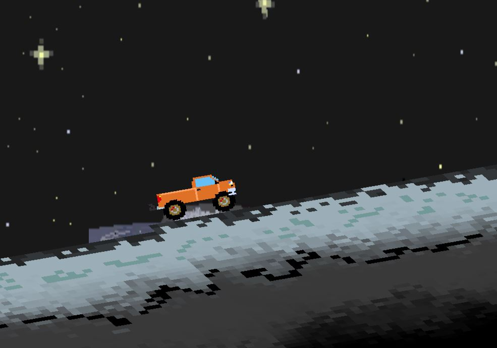

Speed Maniac
Speed Maniac was one of my favorite games, mainly due to my love for racing games. The game was created using C# and Unity3D. It was finally published in Itch.io, a site for indie game developers. The players traverses through a retro city and moon terrain filled with flaming spikes.

